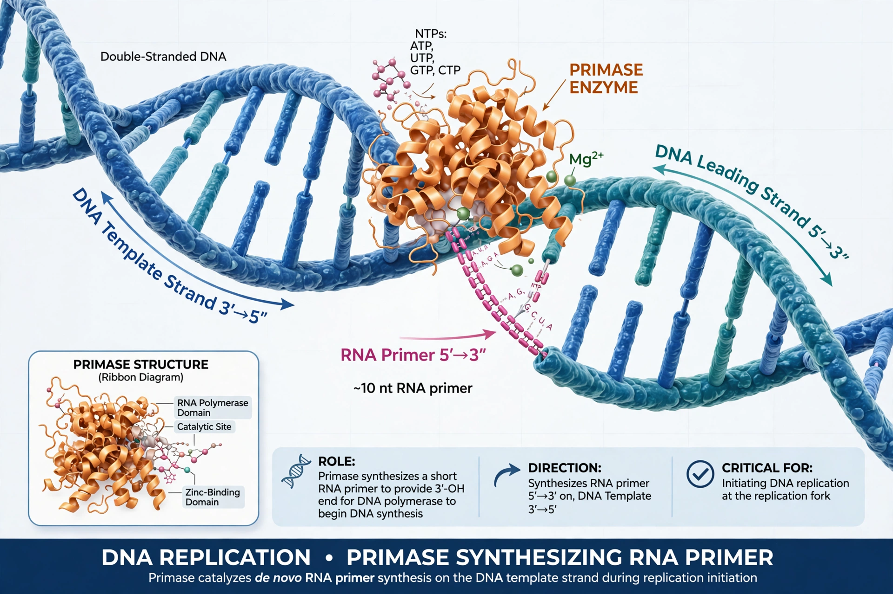

DNA primase is an enzyme involved in the replication of DNA and a type of RNA polymerase. Primase catalyses the synthesis of a short RNA segment called a primer complementary to a single-stranded DNA template. After this elongation, the RNA piece is removed by a 5' to 3' exonuclease and refilled with DNA.
DNA polymerases cannot begin synthesis de novo; they can only extend an existing 3'-hydroxyl group. Primase solves this by laying down a primer: on the leading strand once per origin, and repeatedly on the lagging strand, where each Okazaki fragment begins with an RNA primer. See DNA replication.
In bacteria, primase is encoded by dnaG and acts in association with the DnaB helicase in the primosome. In archaea and eukaryotes, primase is a heterodimeric enzyme forming part of the DNA polymerase alpha–primase complex; its small catalytic subunit is PRIM1 and its regulatory subunit PRIM2 in humans. Archaeal and eukaryotic primases are unrelated in sequence to bacterial primases, an example of analogous function.
Primase synthesises primers of roughly 4–15 nucleotides in eukaryotes (about 10–12 nucleotides in bacteria) without proofreading. The primer is then extended by polymerase alpha with a short stretch of DNA before replicative polymerases take over.